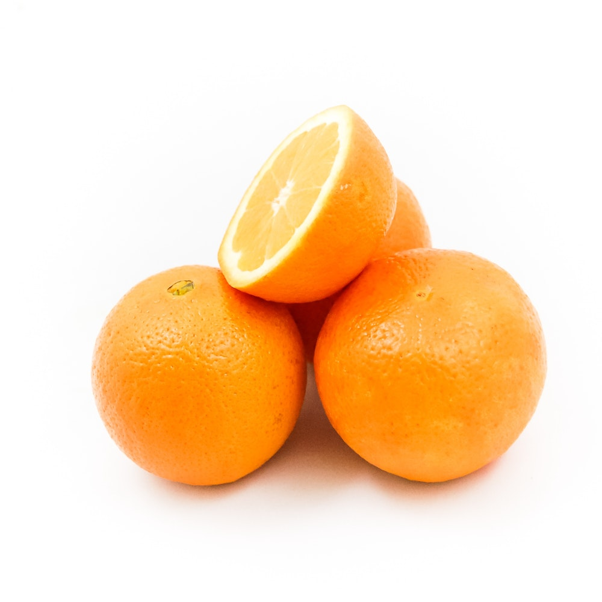

Banana, pacoba ou pacova é uma pseudobaga da bananeira, uma planta herbácea vivaz acaule da família Musacea.
Preço Kg R$3.99

A laranja é um fruto de várias espécies cítricas da família Rutaceae; refere-se principalmente a Citrus × sinensis, que também é chamado de laranja-doce.
Preço Kg R$2.59
A maçã é o pseudofruto pomáceo da macieira, árvore da família Rosaceae. É um dos pseudofrutos de árvore mais cultivados.
Preço Kg R$5.99
Morango é considerado, na linguagem vulgar, como o fruto vermelho do morangueiro, da família das rosáceas.
Preço Kg R$19.99